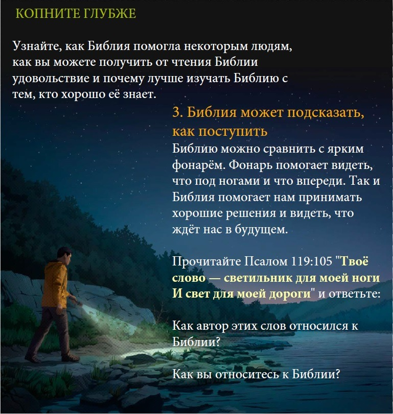

Как вам может помочь Библия?
Урок 01
Как вам может помочь Библия?
Все мы порой задумываемся о жизни, страданиях, смерти и о будущем. Но нас волнуют не только такие глубокие темы. Нас также заботят вопросы, связанные с работой и семьёй. Многие люди убедились, что Библия не только отвечает на важные вопросы о жизни, но и даёт практические советы на каждый день. Кому, по-вашему, будет полезно познакомиться с Библией?
1. На какие вопросы отвечает Библия?
Как возникла жизнь? В чём смысл жизни? Почему с хорошими людьми случаются несчастья? Что происходит после смерти? Если все люди хотят мира, то почему столько войн? Что будет с нашей планетой в будущем? Задавать такие вопросы вполне естественно. И Библия отвечает на них, причём её ответы логичны и убедительны.
2. Как Библия помогает в повседневной жизни?
В Библии есть советы на все случаи жизни, и они всегда работают. Например, в ней объясняется, что делать, чтобы семья была дружной и счастливой. В ней говорится, как справляться со стрессом и как полюбить свою работу. Всё это и многое другое вы узнаете во время нашего библейского курса. Вы убедитесь, что «всё Писание [всё, что записано в Библии] вдохновлено Богом и полезно для обучения, для обличения, для исправления, для наставления в праведности» (2 Тимофею 3:16).
Этот учебник не заменяет Библию. Его цель — пробудить к Библии интерес. Поэтому мы рекомендуем вам во время подготовки читать все библейские отрывки, приведённые в каждом уроке, и сравнивать их с тем, что вы узнаёте на этом курсе.

4. В Библии есть ответы
Одна женщина нашла в Библии ответы на свои вопросы, которые не давали ей покоя много лет. Посмотрите ВИДЕО и ответьте:
ВИДЕО: «Никогда не теряйте надежды!»
Какие вопросы волновали эту женщину?
Как ей помогло изучение Библии?
Сама Библия побуждает нас задавать вопросы. Прочитайте Матфея 7:7 "Просите — и вам будет дано, ищите — и найдёте, стучите — и вам откроют" и ответьте:
На какие вопросы вы хотели бы получить ответ из Библии?
5. Полюбите чтение Библии
Многим людям нравится читать Библию. Она им очень помогает. Посмотрите ВИДЕО и ответьте:
ВИДЕО: «Чтение Библии»
Любят ли эти подростки читать?
Почему к чтению Библии они относятся по-другому?
Библия обещает дать нам утешение и надежду. Прочитайте Римлянам 15:4 "А всё написанное прежде было написано для нашего наставления, чтобы благодаря нашей стойкости и утешению из Писаний мы имели надежду." и ответьте:
Хотите ли вы узнать, как Библия может дать вам утешение и надежду?
6. Воспользуйтесь помощью других
Читать Библию можно самостоятельно, но многие заметили, что, когда обсуждаешь её с тем, кто хорошо её знает, всё становится намного понятнее. Прочитайте Деяния 8:26—31 "А Филиппу ангел Господень сказал: «Иди на юг по дороге, которая спускается из Иерусалима в Газу». (Это пустынная дорога.) 27 Филипп так и сделал. Там он увидел эфиопского вельможу, придворного кандакии, который был её казначеем. Он приезжал в Иерусалим для поклонения, 28 а теперь возвращался домой и, сидя в колеснице, читал вслух пророка Исайю. 29 Дух сказал Филиппу: «Догони эту колесницу». 30 Филипп подбежал к колеснице и, услышав, что тот читает пророка Исайю, спросил: «Тебе понятно то, что ты читаешь?» 31 Тот ответил: «Как же я пойму, если мне никто не объяснит?» — и пригласил Филиппа подняться в колесницу и сесть с ним." и ответьте:
Как понять Библию? (Смотрите стихи 30 и 31.)
Мужчине из Эфиопии нужна была помощь, чтобы понять слова из Священного Писания. Многие люди заметили, что им легче понять Библию, когда они обсуждают её с другими
ГЛАВНАЯ МЫСЛЬ
В Библии есть советы на все случаи жизни и ответы на важные вопросы. Также она даёт утешение и надежду.
Повторение
Какую полезную информацию вы можете найти в Библии?
На какие вопросы отвечает Библия?
Что бы вы хотели узнать из Библии?
Перейдите по ссылке ниже, чтобы узнать, какую надежду даёт Библия
Следующий урок: Библия даёт надежду
Информация для читателей⛔
Настоящие материалы предоставляются на безвозмездной основе в рамках реализации права на свободу совести, убеждений и неприкосновенность личной информационной жизни. Доступ по прямой ссылке организован исключительно для удовлетворения индивидуальных культурно-просветительских и духовных потребностей читателя.
‼️Проект уважает конфиденциальность вашей частной жизни и не осуществляет публичного распространения или коммерческого использования материалов. По любым вопросам, связанным с соблюдением авторских прав или доступом к текстам, вы можете обратиться по адресу: ilyamironu@mail.ru.